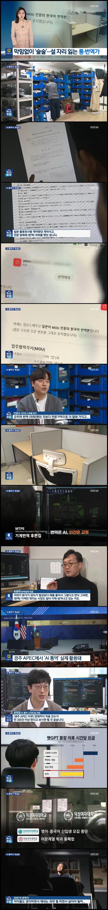
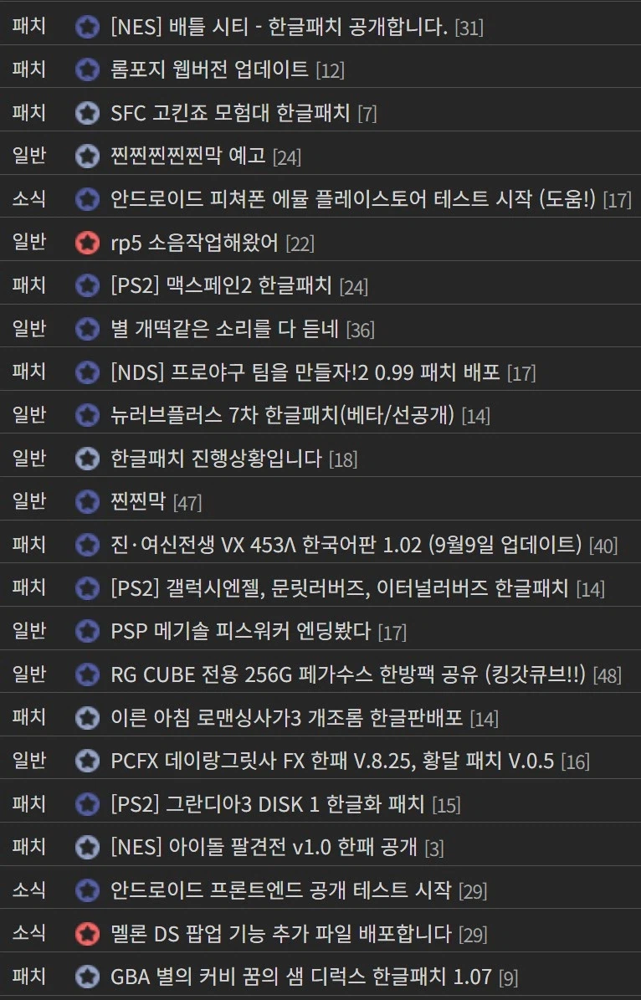

무역업체 대표는 그동안 거래제안서, 계약서 같이
엄청 민감한 문서들은 전문번역가에게 항상 의뢰해왔는데
2년 전부턴 AI를 써도 아무 문제가 없다고 함.
이미 APEC같은 공식 행사에서도 쓰이는 중이고
번역전문업체는 70% 인원 감축.
나머진 AI가 번역한거 검토만 하는 역할인데
그마저도 단가 엄청 내려가서 휘청거림.
관련 대학들도 미래가 암울하다고 보고
신입생 감축, 학과 통폐합 들어감.

결은 좀 다르지만
AI로 한글화 안된 고전게임들 걍 하루에도 수십개씩 한글패치가 쏟아져나옴
AI 딸깍 돌리고 검수 안 한 거라고?
불만족스러우면 제2, 제3의 지나가던 유동이 그냥 딸깍 한글화 다시 돌리고 검수해서 올려주는
개미친 한글화 시대 개막함
어차피 비즈니스적으로 쓰는 언어는 세팅 단계에서 업계 정해두면 그 범위 내 단어 바로 잡혀서 ai 가 인간 따는 건 개쉬운 일이지